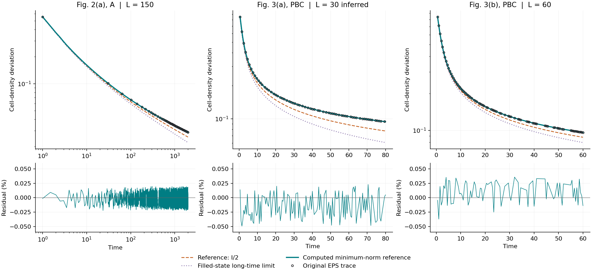

← 主要复现报告 · 2026-10-20–21 · arXiv:1904.08432v2 · 稳态参考续查
主要物理结果已复现，剩余三条周期曲线已对齐到图形精度
这次的进展是：直接求解稳态方程，就会产生此前观察到的基线偏移。
统一参考态后，三条曲线的相对均方根误差为 0.011%–0.025%；初态和胞元计数没有读错。
原因已经收窄：有限偶数周期链存在不衰减的暗模，稳态方程允许多个参考解。
本机求解器选到暗模占据为零的解，和原文写出的半填充参考相差每胞元 1/(2L)。
这一差别改变“减去哪条基线”，不改变动力学、皮肤效应和手性波前。
按相同演化条件比较
均固定原文的满填充初态、跳跃算符、损耗率和胞元计数。只明示比较参考态；
没有自由拟合纵向平移、时间比例或参数。误差指相对于原始矢量曲线的相对 RMSE。
端点不是独立统计样本。“误差带内”按原始 EPS 坐标精度和刻度误差传播计算，
不是作者原始数组完全相等的证明；也不等于像素评分。

上：原图矢量读数与三种参考态。下：采用数值求得参考态后的相对残差。原动力学始终相同。 原图标记归 Song、Yao、Wang；仅含核验所需的三条参考曲线，不适用本仓库内容许可，也不证明作者数组逐点相等。
核对了哪些条件，结论有多稳固
- 初态：图注明确 Δ(0)=I。对同一模型，其他物理初态无法让密度高于满填充轨迹，因此不能用换初态解释正偏移。
- 链长：L 指胞元，系统有 2L 个格点。图 3(b) 明示 L=60；图 3(a) 在 10–180 胞元 × 三种参考态的候选中，只有 L=30、暗模占据为零满足全部端点误差带。早、晚两个时间段也分别选择 L=30。
- 稳态：20 组链长与增益/损耗组合、奇偶链、开链和非临界控制；小系统 SVD 在 1e−8 到 1e−14 截断下结果不变。
- 计算精度：直接矩阵指数与解析传播最大差 1.32e-14；独立仿射 ODE 最大差 3.27e-13；另做 80 位精度控制。
- 读图精度：从作者 EPS 重新读取，用全部刻度标定轴，直接在原图时间点计算。
坐标不确定度从 ±0.0025 到 ±0.004 绘图点变化，三条曲线仍全部相容；四条开链曲线也作了正控制。
哪些是结论，哪些仍是推断
“这个稳态求解机制能够产生原图偏移”已有直接计算和独立算法核对；
“作者当时确实用了这个求解器”没有直接证据。图 3(a) 的 L=30 是在明示候选中的稳定推断，仍不是作者确认。
这些边界不阻碍本轮计算，也不应被写成作者表达不清或论文主要物理结果有问题。
本次没有改写旧的复现证据，也没有把三条曲线增加为三个新完成子图。
来源固定为 arXiv v2；
APS 记录
核对了论文身份与更正记录，最终期刊全文未逐字核对。EPS 的 Mathematica 标记只证明绘图导出工具。
复查文件与原图
条件与推导 · 完整数值 ·
20 组稳态控制 · 计算 · 原生核验投影
本轮 Run：1a042b9e-ea5d-4dcd-b5f8-06b553923c07。同一 Agent 的不同数值方法交叉核验，
不是独立审稿或形式化证明。用户授权公开；原图请从官方论文获取。